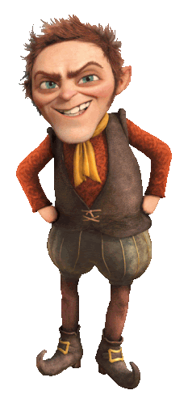
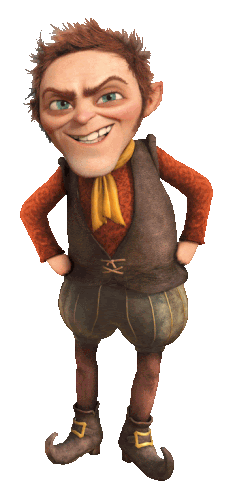

Amor! Te engañe, Ahora Estamos Casados, Puedes ver el acta
Querida Li, Mi Princesita Hermosa
Muchas Gracias Por Aparecer En Mi Vida,
Para Este Dia Tan Especial, Tu hombre Te Preparo Este Detallito Y Que No Falte La Cancion Tan Hermosa Que Me dedicaste,
Linda, Tierna Y Apañadora En Cada Una De Mis Aventuras, No Existe una forma de describirte eres mas que perfecta, Espero Que Este Mes Que Llevamos
Saliendo, Te Haya Echo lo Suficientemente feliz Mi Amor): Quiero Que Sepas Que Te quiero Para Toda La Vida
Me Hace Muy Feliz Y Afortunado Tenerte. Todo Lo Que Contiene Esta pagina
Es Para Agradecer Cada Pequeño Momento Que Hemos Llevado Juntos, Espero Que La Sigamos Completando
Con Cada Locura Secreto Y Amor Que Nos Tenemos, Te Adoro Beb茅グ, eres la mas
(unica) linda perfecta y hermosa esposa que existe jeje
Ademas, ahora si es digna de entrar a la pagina que te hice con tanto cariño
Preciosa Estar en una relacion requiere mucho amor, trabajo y atencion,
y yo estoy dispuesto a darte
todas esas cositas mi niña , asi que preparese para lo que se viene por que ya no te suelto


 
